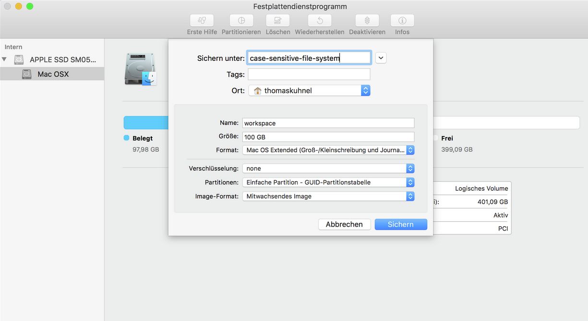

HowTo - Handling Case Sensitive File-System on Mac OS
By default Mac OS uses a case-insensitive file system to support compatibility to applications (e.g. Photoshop) provided for the operating system. The file-system itself is capable of working in a case-sensitive mode. There are a number of options on how to change case sensitivity:
- Re-partition the entire hard drive with case-sensitivity turned on
- Create a new partition and re-format only this new partition with the case-sensitive file-system
- Create a disk image, format that image with the case-sensitive file-system, and mount this disk image
Options 1 and 2 will require tampering with an existing hard drive that contains your operating system. Option 3 is the least destructive and requires very little effort.
Creating The Disk Image
We can use Mac OS' Disk Utility application to create a disk image. We will create a growing image with decent size so we don't waste any hard drive space bit still keep enough room for many projects.
- Open Disk Utility by opening Spotlight (Cmd + Space) and typing disk utility
- Choose File > New Image > Blank Image
- Enter a file name for the disk image (e.g. case-sensitive-file-system)
- Select the place where to store the image (e.g. your home folder)
- Enter a name for the image (e.g. workspace). This name will we shown in Finder once the image is mounted. I like to have matching names for the mountpoint and disk image name so Finder will display it nicely. For my local setup I use workspace as the image's name and mount-point
- Enter a decent value for the size so the image can accommodate all your projects (e.g. 100GB)
- Select the format: Mac OS Extended (Case-sensitive, Journaled)
- Encryption and partitions can be left as is
- Select the image format: Sparse (be careful: Somethimes changing the image format will reset the setting for image size)
The resulting dialog should look something like this:

After the disk has been created you can see it being mounted in Finder already.
Copying Existing Projects
You can copy all existing projects to the newly created box. If it is not mounted simply double-click the disk image file in Finder. After you copied all your projects I suggest replacing your current project directory with the mount-point (please see next section _Automatically Mounting Disk Image at Boot_) for the disk image so you don't have to adjust any paths you already set up.
Automatically Mounting Disk Image at Boot
You don't want to manually mount the disk image every time you restart your system. We will create a Launch Agent that will take care of this.
- Create a new file for the definition of the Launch Agent under (e.g. ~Library/LaunchAgents/local.mount-case-sensitive-file-system.plist)
- Place the following content inside the file
vim ~Library/LaunchAgents/local.mount-case-sensitive-file-system.plist
<?xml version="1.0" encoding="UTF-8"?>
<!DOCTYPE plist PUBLIC "-//Apple//DTD PLIST 1.0//EN" "http://www.apple.com/DTDs/PropertyList-1.0.dtd">
<plist version="1.0">
<dict>
<key>RunAtLoad</key>
<true/>
<key>Label</key>
<string>local.mount-case-sensitive-file-system</string>
<key>ProgramArguments</key>
<array>
<string>hdiutil</string>
<string>attach</string>
<string>[ABSOLUTE_PATH_TO_DISK_IMAGE]</string>
<string>-mountpoint</string>
<string>[ABSOLUTE_PATH_TO_MOUNT_POINT]</string>
<string>-nobrowse</string>
</array>
</dict>
</plist> Please put in some values for [ABSOLUTE_PATH_TO_DISK_IMAGE] (e.g. /Users/joeaverage/case-sensitive-file-system.sparseimage) and [ABSOLUTE_PATH_TO_MOUNT_POINT] (e.g. /Users/joeaverage/workspace). Please make sure that the mount-point folder exists and is empty.
Configuring PHP Storm
The first time you open one of the projects form the disk-image you will notice a warning about case-sensitive file-systems. PHPStorm for Mac OS is configured to work with a case-insensitive file-system and will report a warning that it detected a case-sensitive file-system. Unfortunately there is no way to configure PHPStorm on a per-project level but we can let PHPStorm know that all our projects will be stored on a case-sensitive file system.
- Open PHPStorm and go to Help > Edit Custom Properties
- Add the following option: idea.case.sensitive.fs=true
- Save and close
If you want to know more about this you can find documentation here.
Last review date: Nov. 22nd, 2016